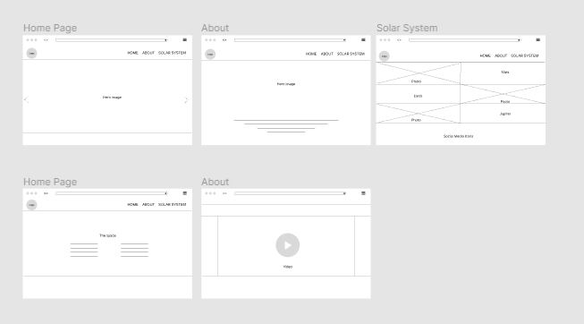
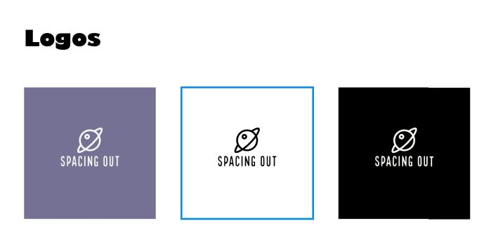
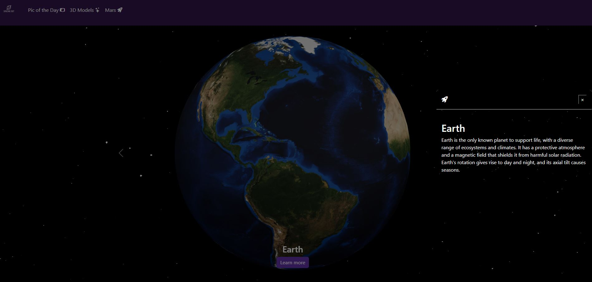

Project Goal
The first idea was to use some of NASA open API, Bootstrap, 3D and AR models to build a universe theme website about the Universe. Along the way, I had some suggestions from my teacher to add Open AI API to create a chat bot that answers questions about the Universe. Unfortunately, I was not able execute the chat bot part because it is not a free API, and I was not comfortable with paying for the API when I’m still a student. I’m scared to make a mistake and get charge a lot of money for it. However, in the future I will definitely, explore this technology.
Technology used:
- Node.js
- EJS
- JavaScript
- Model Viewer
- Bootstrap
- API
Ideation
I used Figma to create a possible layout of the website. Here I also created a mood board to set a colour palette, typography, inspirations, and some UI Kit. For the creation of the logo I used Adobe Express to generate one according to my brand and colour palette. This was very useful since I didn’t have to spend to much time designing one myself because that was not the focus of my project.
 Development
For the development part I used Node.js and Express.js because this was part of the another course and I wanted to continue exploring it. Express.js was a really good option for templating, so whenever I modified something that was in all the pages I just need it to modify it in the partial one. Also, it was useful to print the data I was fetching from the APIs. For the styling I used Bootstrap and CSS. One of the technologies I wanted to explore was Bootstrap because I read is very popular in the frontend development industry. In the pictures above you see how I implemented the bootstrap classes for the styling.
The API I ended up using are APOD, Mars Rover Photos to display images. I tried using Insight but there was not data available, so I used the Curiosity iframe to display the latest weather data from Gale Crater in Mars. The APOD API will display a different image everyday, this images contain a description, date and who took the picture. The Mars Rover Photos API is going to display photos of Mars, I realized that they were too many, so instead of displaying it all, I chose to display only 15 of them, because some of them were very similar. The Curiosity Rover measures and provides daily and seasonal reports on atmospheric pressure, humidity, ultraviolet radiation at the Martian surface, air temperature, and ground temperature around the rover. I decided to embed the Iframe to display the latest weather report instead of using Insight API which doesn’t have updated information.
For the 3D models I used Adobe Aero to render the object and then I opened it in Adobe Substance 3D Stager to convert the models in .glb format to use it in model viewer. I used model-viewer to display the 3D models of each planet and the Sun. You can move them to see every side of the models. If you see it in your for you will have the chance to see it in your space through Augmented Reality.

Reflection
This project helped me learn new skills, problem solving, and patience. I’m happy with the overall outcome. I’m very happy of having learn new skills that are going to be useful in my career. Not only I learned new technical skills but also how to google things. It might not sound important, but I heard from other developers that in this industry I’ll need to learn how to google, and how to use AI in my favour. Lastly, learning new things is something that I enjoy, so I will continue trying out new technologies and improving my skills. I’m determined to become a developer 👩💻.